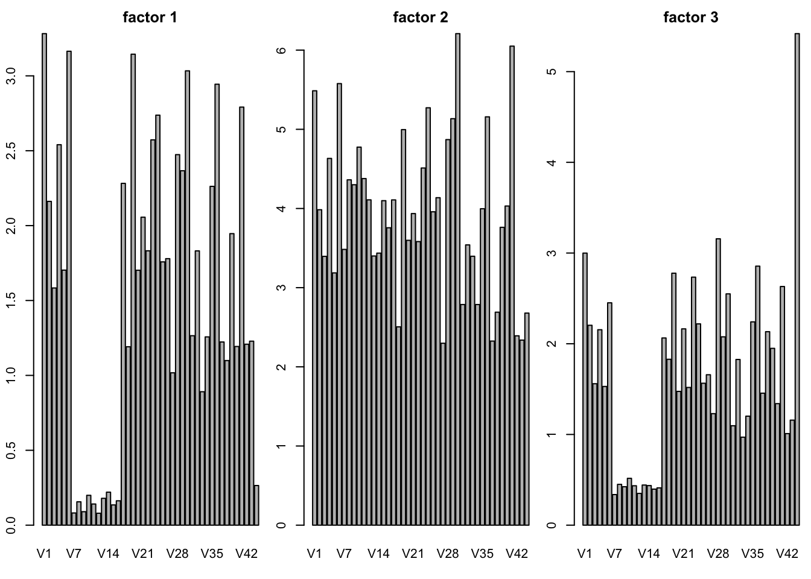
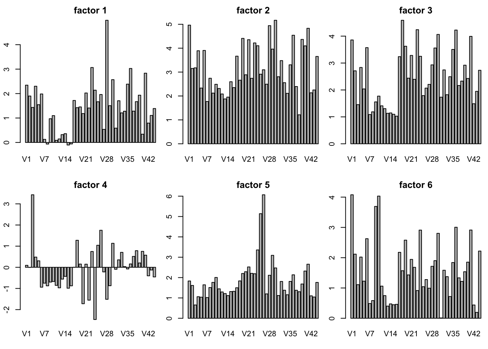
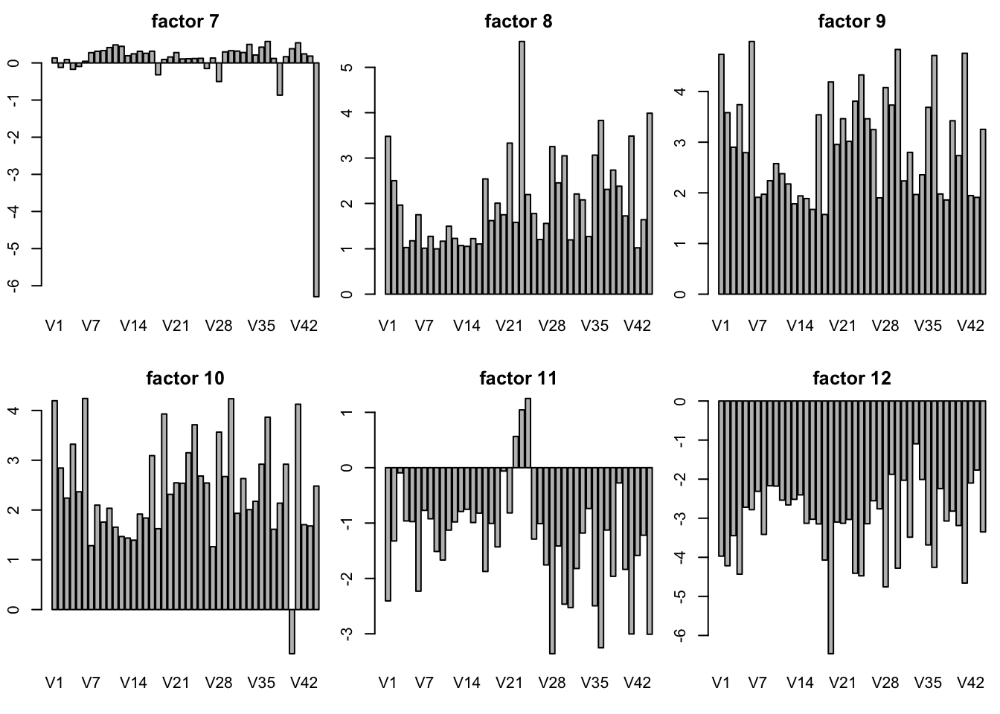
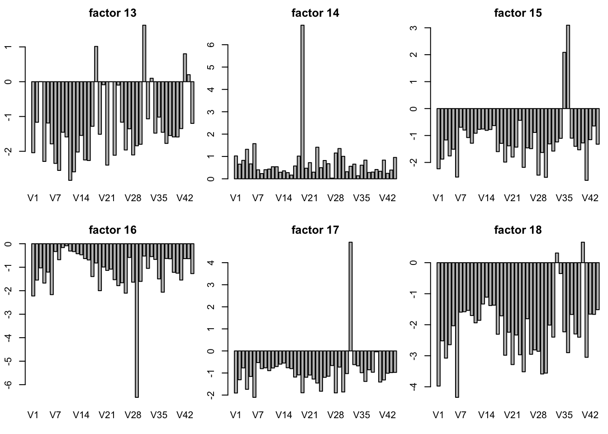
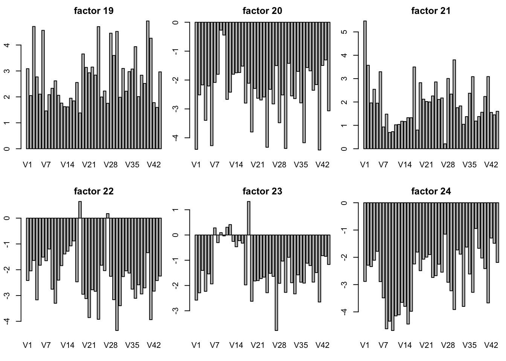
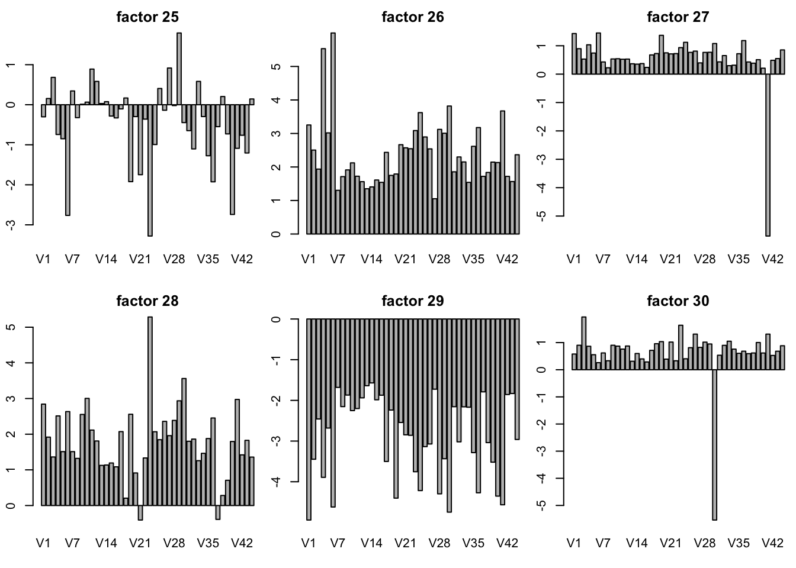
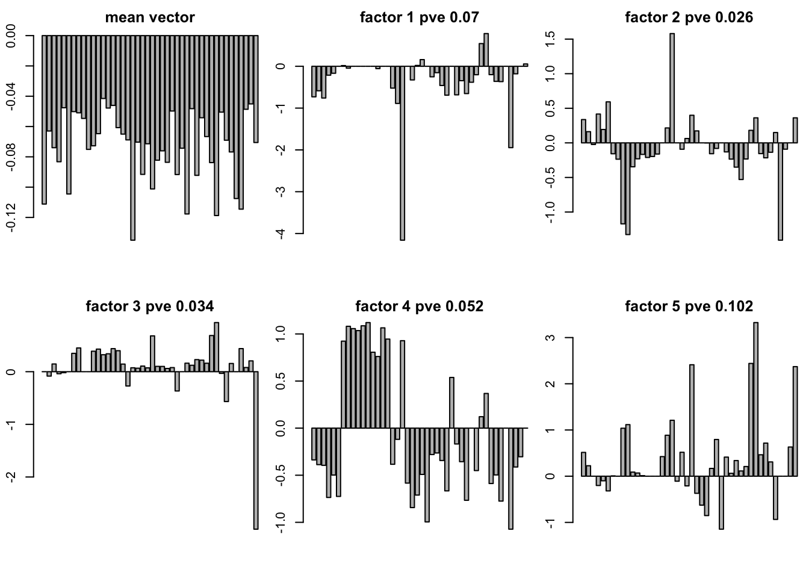
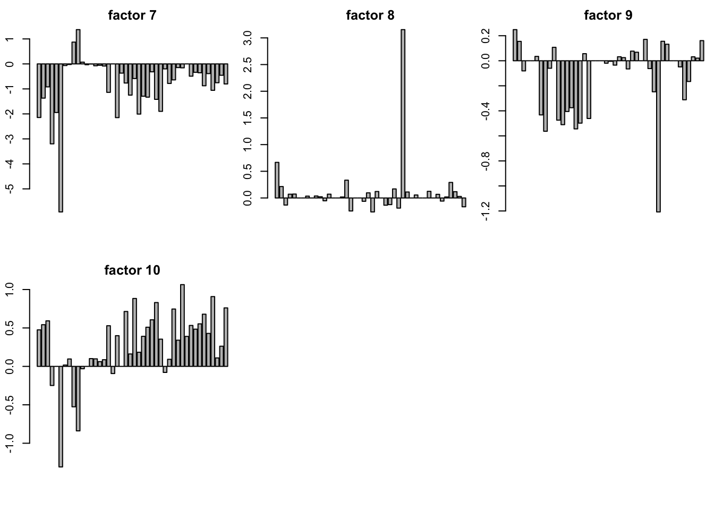

Template for GTEx example on cluster
wei
09-29
Last updated: 2017-10-05
Code version: 16e92c3
Install the package
1 please git clone the flashr2 on PPS.
git clone https://github.com/stephenslab/flashr2.git
2 install flashr2 locally
R CMD build flashr2
R CMD INSTALL flashr2_0.2-2.tar.gz
prepare the data
original data
Please read your original data as a \(N \times P\) matrix in R.
In this case you can create a folder the restore the data as .rds file
mkdir testflashr2
cd testflashr2
cp gtexEQTL_zscore.rds GTEX/testflashr2/now you have the data matrix in gtexEQTL_zscore.rds
to restore the result and track the errors, you can crest folders
mkdir output
mkdir ourlogrun FLASH
Here I take the GTEx EQTL zscore as an example
creat a .R file
library(ashr)
library(flashr2)
load("./gtexEQTL_zscore.rds")
Y = t(zscore)
data = flash_set_data(Y)
f_greedy = flash_add_greedy(data,Kmax=60)
f_greedy_bf = flash_backfit(data,f_greedy)
#f_greedy = flash_add_greedy(data,Kmax=60,var_type = "by_column",ash_param=list(method = "fdr"))
#f_greedy_bf = flash_backfit(data,f_greedy,var_type = "by_column",ash_param=list(method = "fdr"))
saveRDS(f_greedy,file = "./output/gflashvarcol.rds")
saveRDS(f_greedy_bf,file = "./output/bflashvarcol.rds")here 60 is much larger than the sample size. our method doesn’t restrict \(K < \min(P,N)\). But for this case, 60 is enough. We call this file as flashwrapper.R
creat a .sbatch file
#!/bin/bash
#SBATCH --job-name=arrayJob
#SBATCH --output=/home/weidong/HG/flash/data/GTEX/testflashr2/outlog/arrayJob_%A_%a.out
#SBATCH --error=/home/weidong/HG/flash/data/GTEX/testflashr2/outlog/arrayJob_%A_%a.err
#SBATCH --array=1
#SBATCH --time=30:00:00
#SBATCH --partition=mstephens
#SBATCH --nodes=1
#SBATCH --ntasks-per-node=1
#SBATCH --mem-per-cpu=8G
######################
# Begin work section #
######################
# Print this sub-job's task ID
cd /home/weidong/HG/flash/data/GTEX/testflashr2
Rscript --verbose flashwrapper.Ryou can substitute the folder path /home/weidong/HG/flash/data/GTEX/testflashr2. and we call this .sbatch file as runflash.sbatch
run
sbatch runflash.sbatch plot
b_flash = readRDS("../data/GTExdata/res_flashr2/bflashvarcol.rds")
load("../data/GTExdata/gtexEQTL_zscore.rds")
ssY = sum(zscore^2)
K = dim(b_flash$EL)[2] -1
pve = (sapply(seq(1,K),function(x){ sum(b_flash$EL[,x]^2 %*% t(b_flash$EF[,x]^2)) }))/ssY
pve = pmax(round(pve,3),0.001)
dat = read.table('../data/GTExColors.txt', sep = '\t', comment.char = '')
colordata = dat[c(1:6,9:18,21:23,26:30,32,33,35,36,38:53),1:2]
L = b_flash$EL[,1:14]
library(reshape2)
data_L = melt(L)
colnames(data_L) = c("tissue","loading","value")
library(ggplot2)
tissue_color = as.character(colordata[,2])
data_L$tissue = factor(data_L$tissue,levels = 1:44 ,labels = as.character(colordata[,1]) )
data_L$loading = factor(data_L$loading,levels = 1:14 ,labels = paste("loading",1:14,"; pve:", pve[1:14]))
ggplot(data_L,aes(x = tissue,y = value,fill = factor(tissue) )) +
geom_bar(stat = "identity",width = 0.6) +
scale_fill_manual(values=tissue_color) +
scale_x_discrete(labels = NULL) +
theme_grey()+
theme(legend.position="right", legend.text=element_text(size=5), axis.text.y = element_text(size = 5)) +
labs(title = "GTEx data", y = "loading values" ,x = "tissues", fill="tissue") +
facet_wrap(~loading, ncol = 2, scales = "free_y") +
guides(fill = guide_legend(ncol = 1, keyheight = 0.5, keywidth = 0.5))
ggsave("flashr2GTEx1.pdf", width = 8, height = 11)
# the 27th factor is zero
L = b_flash$EL[,15:26]
library(reshape2)
data_L = melt(L)
colnames(data_L) = c("tissue","loading","value")
library(ggplot2)
tissue_color = as.character(colordata[,2])
data_L$tissue = factor(data_L$tissue,levels = 1:44 ,labels = as.character(colordata[,1]) )
data_L$loading = factor(data_L$loading,levels = 1:12 ,labels = paste("loading",15:26,"; pve:", pve[15:26]))
ggplot(data_L,aes(x = tissue,y = value,fill = factor(tissue) )) +
geom_bar(stat = "identity",width = 0.6) +
scale_fill_manual(values=tissue_color) +
scale_x_discrete(labels = NULL) +
theme_grey()+
theme(legend.position="right", legend.text=element_text(size=5), axis.text.y = element_text(size = 5)) +
labs(title = "GTEx data", y = "loading values" ,x = "tissues", fill="tissue") +
facet_wrap(~loading, ncol = 2, scales = "free_y") +
guides(fill = guide_legend(ncol = 1, keyheight = 0.5, keywidth = 0.5))
ggsave("flashr2GTEx2.pdf", width = 8, height = 10)the plots are
an example to run SFA on RCC or PPS
- go to the folder where the data is.
sfa wrapper
this example is on PPS cluster
SFA.wrapper = function(X, K){
N = dim(X)[1]
P = dim(X)[2]
if(file.exists("SFAout")){
unlink("SFAout", recursive= T)
}
system("mkdir SFAout")
write.table(X,file="dscsfa.txt",row.names=F,col.names=F)
# sfa command line on cluster
# ~/flash/simulation/methods/sfa/src/sfa -gen ./dscsfamix.txt -g 600 -k 1 -n 200 -iter 100 -rand 999 -o ./SFAout/sfa
# sqrt(mean(( loadings %*% factor - test$L_true%*%t(test$F_true))^2))/sqrt(mean((test$L_true%*%t(test$F_true))^2))
system(paste("~/flash/simulation/methods/sfa/src/sfa", "-gen", "./dscsfa.txt", "-g", N, "-k", K,
"-n", P, "-iter", 100, "-rand", 999, "-o", "./SFAout/sfa", sep=" "))
if(file.info("./SFAout/sfa_F.out")$size == 1){
return(list(L = 0, F = 0))
} else{
Fhat=read.table("./SFAout/sfa_F.out")
lambda=read.table("./SFAout/sfa_lambda.out")
Fhat=as.matrix(Fhat)
lambda=as.matrix(lambda)
return(list(L = lambda, F = Fhat))
}
}
SFAmix.wrapper = function(X,K){
N = dim(X)[1]
P = dim(X)[2]
write.table(X,file="dscsfamix.txt",row.names=F,col.names=F)
print(class(X))
print(dim(X))
if(file.exists("SFAmixout")){
unlink("SFAmixout", recursive= T)
}
system("mkdir SFAmixout")
# ~/mvash/mvsim/SFAmix/SFAmix --nf K --y dscrsfamix.txt --out SFAmixout --sep space
# this is run on the PPS cluster
system(paste("~/mvash/mvsim/SFAmix/SFAmix","--nf",K,"--y","dscsfamix.txt","--out",
"SFAmixout","--sep","space",sep=" "))
alpha=read.table("./SFAmixout/PSI")
if(file.info("./SFAmixout/EX")$size == 1){
return(list(L = 0, F = 0))
} else{
Fhat=read.table("./SFAmixout/EX")
lambda=read.table("./SFAmixout/LAM")
Psi=as.vector(alpha)
Fhat=as.matrix(Fhat)
lambda=as.matrix(lambda)
P=dim(lambda)[2]
n=dim(Fhat)[1]
return(list(L = Fhat, F = lambda))
}
}this is sfawrapper.R
creat run_sfa.R file
load("~/flash/dataanalysis/GTeX/EQTLzscore/gtexEQTL_zscore.rds")
setwd("~/flash/dataanalysis/GTeX/EQTLzscore/")
source("./sfawrapper.R")
source("./SFAmixwrapper.R")
Y = zscore
N = dim(Y)[1]
P = dim(Y)[2]
gsfa = SFA.wrapper(Y, 30)
saveRDS(gsfa, file = "~/flash/dataanalysis/GTeX/EQTLzscore/sfaGTExzscore.rds")
Y = t(zscore)
gsfamix = SFAmix.wrapper(Y,30)
saveRDS(gsfamix, file = "~/flash/dataanalysis/GTeX/EQTLzscore/sfamixGTExzscore.rds")
and run it
R CMD BATCH run_sfa.Rremark
For Y = t(zscore), SFA provide NaN result when set K = 30 and K = 26. (all the \(L_i\) and \(F_j\) are NaN). So I use Y = zscore which works in K = 30 and K = 26. In this case, I set K = 30
in this case we can get
> gsfa = SFA.wrapper(Y, 30)
Setting G to be 16069
Setting N to be 44
Trying to read in matrix with G=16069 and N =44
Opening matrix ./dscsfa.txt with 16069 rows and 44 columns
Opening matrix ./dscsfa.txt with 16069 rows and 44 columns
read in matrix 16069 by 44
initializing sfa...
G = 16069
N = 44
K = 30
But for SFAmix we should use Y = t(zscore).
The approaches make sure we can get \((\hat{\sigma}_1^2,\cdots,\hat{\sigma}_j^2,\cdots)\) is a 16069 vector.
SFA K=3
g3 = readRDS('../data/GTExdata/SFAres/sfaK_3.rds')
par(mfrow = c(1,3),mar=c(5.1,4.1,4.1,2.1)-1.9)
for(k in 1:3){
barplot(g3$F[k,],main = paste("factor",k))
}
plot SFA result K = 30
sfares = readRDS("../data/GTExdata/SFAres/sfaGTExzscore.rds")
# the F is K by N matrix! not N by K matrix
par(mfrow = c(2,3),mar=c(5.1,4.1,4.1,2.1)-1.9)
for(k in 1:30){
barplot(sfares$F[k,],main = paste("factor",k))
}
plot of SFA result with t(Y) K = 10
gt10 = readRDS('../data/GTExdata/SFAres/sfaTYK_10.rds')
par(mfrow = c(2,3),mar=c(5.1,4.1,4.1,2.1)-1.9)
for(k in 1:10){
barplot(gt10$L[,k],main = paste("factor",k))
}
plot SFAmix result
sfamixres = readRDS("../data/GTExdata/SFAres/sfamixGTExzscore.rds")
dim(sfamixres$L)[1] 44 1dim(sfamixres$F)[1] 1 16069this is only a rank one matrix. I tried two time. two runs give rank one matrix.
Session information
sessionInfo()R version 3.3.0 (2016-05-03)
Platform: x86_64-apple-darwin13.4.0 (64-bit)
Running under: OS X 10.12.6 (unknown)
locale:
[1] en_US.UTF-8/en_US.UTF-8/en_US.UTF-8/C/en_US.UTF-8/en_US.UTF-8
attached base packages:
[1] grid stats graphics grDevices utils datasets methods
[8] base
other attached packages:
[1] reshape2_1.4.2 ssvd_1.0 cowplot_0.8.0 MASS_7.3-47
[5] PMA_1.0.9 impute_1.48.0 plyr_1.8.4 softImpute_1.4
[9] Matrix_1.2-11 R.matlab_3.6.1 workflowr_0.4.0 rmarkdown_1.6
[13] ggplot2_2.2.1 flashr2_0.2-3 ashr_2.1-25
loaded via a namespace (and not attached):
[1] Rcpp_0.12.12 git2r_0.19.0 R.utils_2.5.0
[4] R.methodsS3_1.7.1 iterators_1.0.8 tools_3.3.0
[7] digest_0.6.12 evaluate_0.10.1 tibble_1.3.3
[10] gtable_0.2.0 lattice_0.20-35 rlang_0.1.2
[13] foreach_1.4.3 rstudioapi_0.6 yaml_2.1.14
[16] parallel_3.3.0 stringr_1.2.0 knitr_1.17
[19] REBayes_0.85 rprojroot_1.2 magrittr_1.5
[22] scales_0.4.1 backports_1.1.0 codetools_0.2-15
[25] htmltools_0.3.6 assertthat_0.2.0 colorspace_1.3-2
[28] labeling_0.3 stringi_1.1.5 Rmosek_7.1.2
[31] lazyeval_0.2.0 pscl_1.4.9 doParallel_1.0.10
[34] munsell_0.4.3 truncnorm_1.0-7 SQUAREM_2016.8-2
[37] R.oo_1.21.0 This R Markdown site was created with workflowr